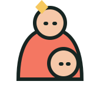

Web App & SaaS
Aplikasi berbasis web yang cepat, responsif, dan siap dipakai banyak pengguna — dari dashboard internal sampai produk SaaS.
software house · Semarang, Indonesia
Difira Studio merancang, membangun, dan menjalankan produk digital — untuk portofolio produk kami sendiri dan untuk bisnis yang ingin bergerak lebih cepat.
layanan
Satu tim kecil yang menangani strategi produk, desain, engineering, sampai perawatan setelah rilis.
Aplikasi berbasis web yang cepat, responsif, dan siap dipakai banyak pengguna — dari dashboard internal sampai produk SaaS.
Kasir, manajemen order, stok, dan laporan untuk UMKM. Kami sudah membangun dan menjalankan sistem ini sendiri.
Chatbot, ringkasan data, dan otomasi pekerjaan repetitif — diterapkan di tempat yang benar-benar menghemat waktu.
Riset pengguna, alur, dan antarmuka yang mudah dipahami, bahkan oleh pengguna yang jarang memakai aplikasi.
Validasi ide dengan produk pertama yang ramping, lalu iterasi berdasarkan data dan masukan pengguna nyata.
Pemantauan, perbaikan, dan pengembangan fitur berkelanjutan setelah produk diluncurkan.
portofolio produk
Kami membuktikan kemampuan dengan membangun produk sendiri. Setiap produk menyelesaikan masalah operasional yang nyata.
POS sederhana untuk bisnis F&B yang ingin melayani lebih cepat dan mencatat lebih rapi. Sudah bisa dicoba langsung.
Buka TehPOS ↗Semua order, status cucian, dan laporan laundry dalam satu tempat yang mudah dipahami.
Atur jadwal, booking, dan waktu dengan cara yang tidak bikin kepala ikut penuh.

Kalkulator tumbuh kembang anak yang membantu orang tua memantau perkembangan anak dari waktu ke waktu.
model bisnis
Produk digital untuk UMKM dan keluarga Indonesia, dimulai dari TehPOS. Dibangun sekali, bisa dipakai banyak pengguna.
Kami membuka layanan pembuatan software untuk bisnis. Masalah yang sering muncul di proyek klien bisa menjadi ide produk berikutnya.
cara kami bekerja
Memahami masalah, pengguna, dan tujuan bisnis sebelum menulis satu baris kode.
Alur dan prototipe yang divalidasi bersama pengguna sejak awal.
Pengembangan bertahap dengan rilis rutin, sehingga progres selalu terlihat.
Rilis, ukur, dan iterasi berdasarkan data pemakaian nyata.
keunggulan kami
Kami memanfaatkan AI untuk menemukan pola, mempercepat pekerjaan, dan membantu menciptakan solusi yang sebelumnya tidak terpikirkan.
Keputusan produk tetap dimulai dari manusia: mendengar pengguna, memahami konteks, dan memastikan teknologinya benar-benar membantu.
tentang kami
Difira Studio adalah unit software dari PT Difira Berkah Bersama, berbasis di Kecamatan Genuk, Kota Semarang. Kami fokus pada masalah sehari-hari yang sering dianggap sepele — kasir yang berantakan, jadwal yang terlewat, orang tua yang ingin lebih siap — dan mengubahnya menjadi software yang sederhana dan bisa diandalkan.
kami sedang berkembang
investor, mitra, atau klien
Kami terbuka untuk diskusi kemitraan, investasi, maupun proyek pengembangan software.